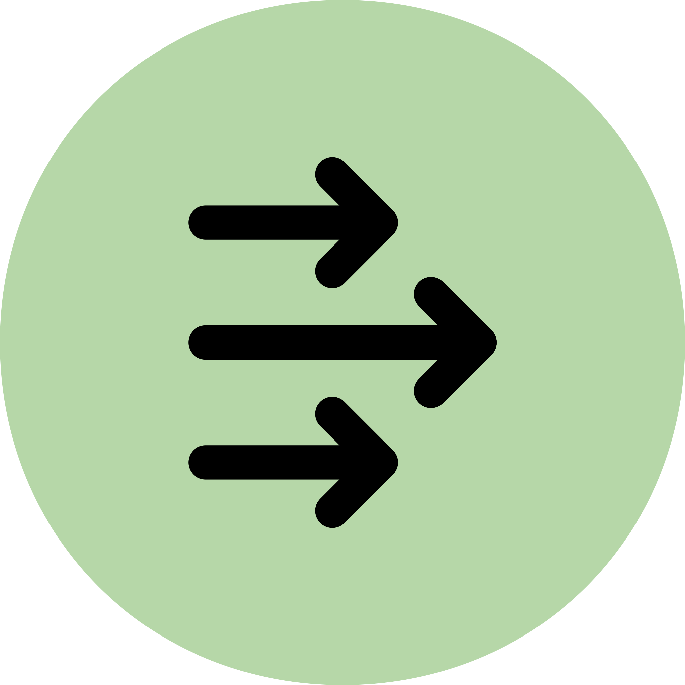
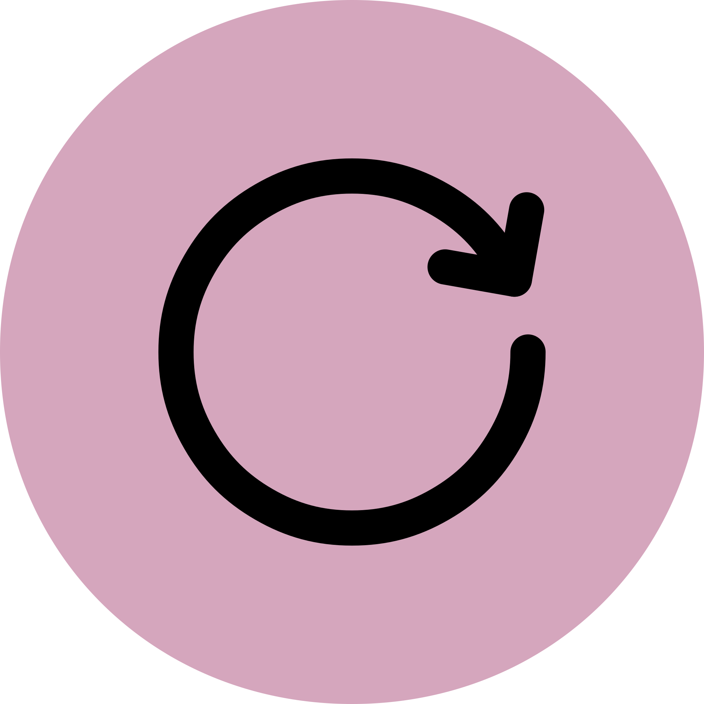

This worksheet is based on the Ten Conditions for Change framework used in ClearerThinking.org’s online tool "Change Behavior for the Better," which breaks positive behavior change into three phases and ten conditions that are sufficient to create a behavior change. More information on this framework can be found at: https://www.sparkwave.tech/conditions-for-change. You can access the tool here: https://programs.clearerthinking.org/change_behavior.html
The Behavior Change
The sequence of actions that will be sufficient for the behavior change:
Check off the conditions below that have already been met. Those that remain should be your main focus in making the behavior change. Brainstorm a strategy for making sure that each of the missing conditions is met.
{{ phase.title }}